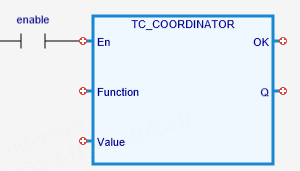

System Parameter
Allows special firmware features to be enabled or changed.
|
Function : INT; |
Description |
Value : DINT; |
|
16 |
Disable/Enable BASE check on axes order. When enabled, the axes in BASE must be in ascending order, e.g. BASE(0, 1, 4, 5, 6)
0 = Axes order check enabled. (Default)
|
0 / 1 |
|
30 |
Returns the P number of the CANIO module at address n |
|
|
31 |
Returns the firmware Boot Code version number |
|
|
53 |
Over-rule the system that prevents software from loading a BASIC or Text file into the Motion Coordinator when Motion Perfect is connected in Sync mode. |
0 / 1 |
|
|
Allows special firmware features to be enabled or changed. Check the function you intend to use is available by first contacting your Trio Distributor.
The random use of undocumented TC_COODRDINATOR functions may cause the Motion Coordinator to become unstable. It will then need to be returned to the manufacturer for reset.
TC_COORDINATOR(Function:= (INT), Value:= (DINT));
Not available.
